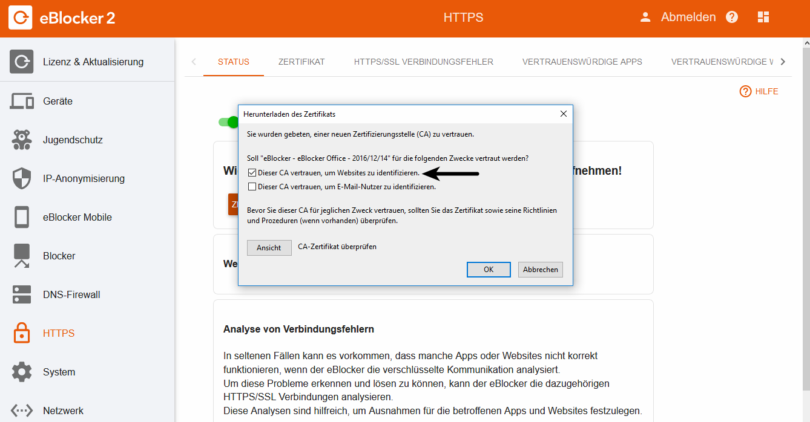

Mit nur wenigen Schritten haben Sie das Zertifikat hinterlegt. Benutzen Sie bitte den Firefox, Cliqz, oder SeamonkeyBrowser.
Öffnen Sie die eBlocker HTTPS Konfigurationsseite, oder das eBlocker Dashboard.
Klicken Sie in auf der HTTPS Konfigurationsseite auf den Button HTTPS ASSISTENT STARTEN, oder in dem eBlocker Dashboard in der HTTPS Karte auf den Link HTTPS ASSISTENT STARTEN.
Der Assistent wird Ihnen Schritt für Schritt aufzeigen, wie Sie das eBlocker Zertifikat in Firefox, Cliqz, oder Seamonkey hinterlegen.
Alternativ können Sie das eBlocker Zertifikat auch ohne den Assistenten hinterlegen.
- Klicken Sie auf der HTTPS Konfigurationsseite auf den Reiter ZERTIFIKAT.
- Nun klicken Sie den Button HERUNTERLADEN. Gegebenenfalls kann man das Zertifikat auch mit einem Rechtsklick auf den Button und dann "Speichern unter" herunterladen.
- Stellen Sie sicher, dass die erste Checkbox "Dieser CA vertrauen, um Websites zu identifizieren" ausgewählt ist (siehe Bilddarstellung).

- Klicken Sie auf OK um das eBlocker-Zertifikat in Firefox aufzunehmen.
Sie sehen im Firefox, Cliqz, oder Seamonkey Browser nun die eBlocker Controlbar auf HTTPS-Seiten.
Achtung: Diese Anleitung gilt auch für den Android Firefox Browser, aber nicht für den iOS Firefox Browser.